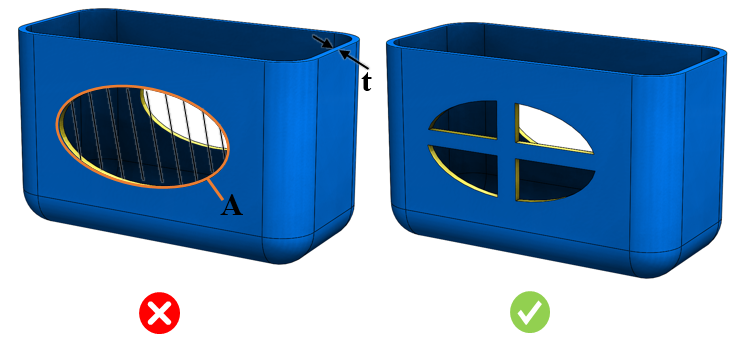

切り欠き面積と公称肉厚との比率は、ユーザーが指定した値未満でなければなりません。
射出成形部品における大きな開口部は、部品の強度を低下させる可能性があります。この弱点を低減または解消するためには、開口部のサイズを小さくするか、断面に補強リブを設けて開口部を補強する必要があります。
最大切り欠き面積に関するガイドラインは、使用条件に基づいて策定する必要があります。
製品の製造条件および使用条件に合わせて、切り欠き面積と公称肉厚との比率について適切な値を設定してください。
ルールUIでは、材料の一覧が Map Material から読み込まれ、ユーザーは材料およびそれぞれの値を設定することができます。
材料とその値を設定した後、Ctrl+M コマンドを使用することで、ルールUI上で材料グループおよびグレードごとに設定済み材料の一覧をフィルタ表示できます。同じキー（Ctrl+M）を使用してフィルタを解除できます。

ここで、
A = 切り欠き面積
t = 公称肉厚